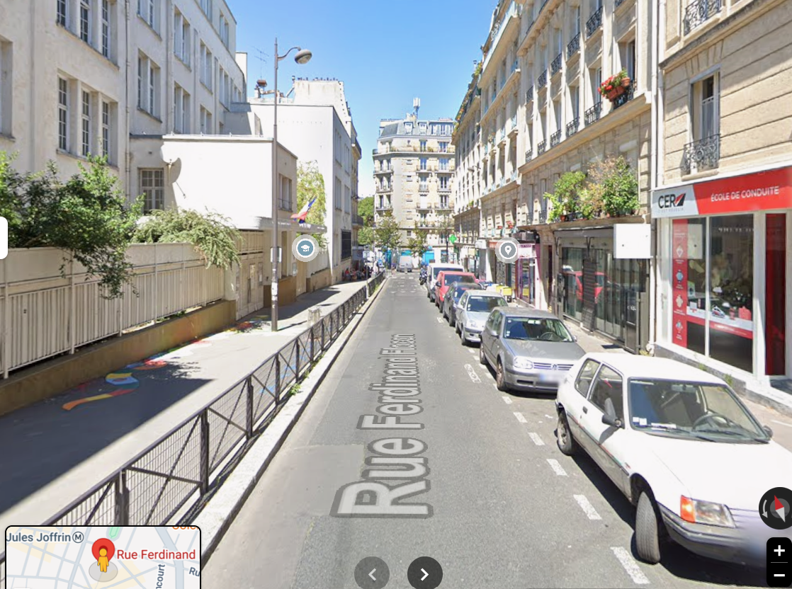
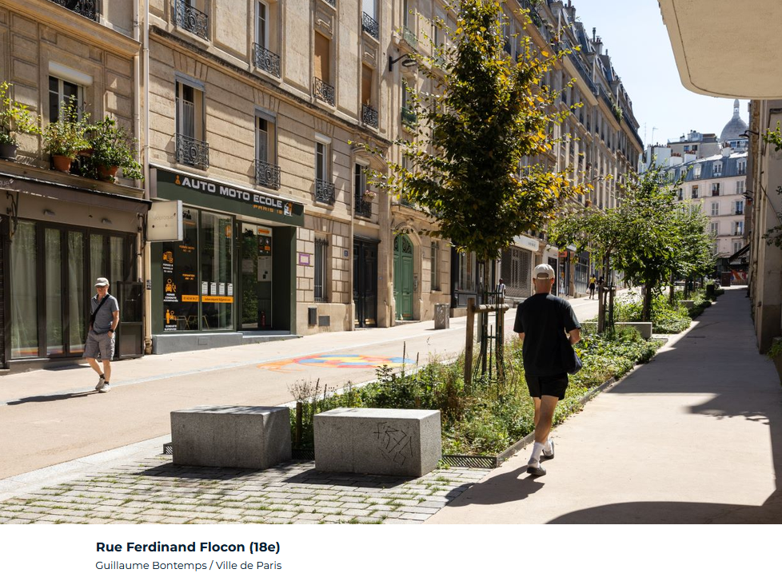

Überblick
Start am Hotel PiaPia im 20e, dann zehn Stationen zu Klimaschutz, Klimaanpassung und nachhaltigem Wirtschaften — in einem grossen Bogen quer durch die Stadt bis an den Fuss von Montmartre. Rechnet pro Station eher 15–20 Minuten als lange Pausen ein, dann geht sich das an einem entspannten Nachmittag aus.
📍 Ganze Route in Google Maps öffnenDie Videos sind alle auf Französisch — falls das zu viel ist: YouTube-Untertitel (CC-Symbol) anschalten und auf Deutsch automatisch übersetzen lassen.
- Hintergrund: Anne Hidalgo und die Kehrseite
- Start: Hotel PiaPia
- Square Charles Péguy — Gemeinschaftsgärten an der Petite Ceinture
- Petite Ceinture (13e) — die Stadt, die nichts tat
- Bassin d'Austerlitz — die unsichtbare Klimaanpassung
- Rue de Rivoli — die Velo-Hauptachse
- Forêt urbaine Hôtel de Ville — Stadtwald vorm Rathaus
- Voie Georges Pompidou — die Autobahn, die verschwand
- Seine bei Notre-Dame — wieder schwimmbar
- École Keller — Cour Oasis
- La Recyclerie — die Petite Ceinture, diesmal gestaltet
- Rue Ferdinand-Flocon — eine echte rue aux écoles
- Ausklang: Vegan & Bier — das grosse Bild
- Nebenbei: La Caverne — Pilze aus der Tiefgarage (Info, kein Halt)
🏛️Anne Hidalgo und die Kehrseite
Bevor es losgeht, kurz zu der Frau, um die die ganze Tour eigentlich kreist: Anne Hidalgo, Sozialistin (in Deutschland würde man Sozialdemokratin sagen), seit 2014 Bürgermeisterin von Paris, 2020 wiedergewählt, seit sechs Jahren auch Vorsitzende der C40-Klima-Allianz der 100 grössten Städte weltweit. International gilt sie als eine der bekanntesten Vorkämpferinnen für autoarme, grüne Städte — ihr Konzept der "15-Minuten-Stadt" wurde vielfach kopiert. Lokal ist sie umstritten, gerade bei Vorstädter:innen und politischen Gegnern, die ihr vorwerfen, Autofahrende zu bestrafen; die 15-Minuten-Stadt hat sie sogar in Verschwörungstheorien verwickelt. Ihre Amtszeit endet mit der Bürgermeisterwahl im März 2026 — ihr ehemaliger Vize Emmanuel Grégoire holte im ersten Wahlgang die meisten Stimmen.
Die Bilanz, die diese Tour zeigt — autofreie Rivoli, verschwundene Uferschnellstrasse, Stadtwälder, schwimmbare Seine, 1'400 km Velowege, 213'000 neue Bäume seit 2014, 24'000 abgebaute Parkplätze — ist real und international vielbeachtet. Aber sie hat eine Kehrseite, die auf keiner der folgenden Stationen sichtbar wird.
DW REV (Deutsche Welle), Deutsch — Dokumentation, die genau diese Spannung zwischen Innenstadt-Erfolg und Vorstadt-Realität zeigt.
Zum Nachdenken: Wer zahlt für die Verkehrswende?
Wer sich die Innenstadt nicht mehr leisten kann, zieht ins Umland — wo der ÖV historisch schlechter ausgebaut ist und man für den Arbeitsweg oft aufs Auto oder Motorrad angewiesen bleibt. Gleichzeitig macht dieselbe Politik, die die Innenstadt lebenswerter macht, das Autofahren dorthin laufend teurer: 24'000 Parkplätze weg seit 2020 (weitere Zehntausende auf 500 Strassen geplant), Parkgebühren für SUV/grosse Autos seit September 2024 auf 18 €/Stunde verdreifacht, mehr Tempo-30-Zonen. Der Ausbau des Grand Paris Express (68 neue Metro-Stationen, 200 km neue Strecken) soll die Vorstädte ans Netz anschliessen — ist aber grösstenteils erst im Bau, fertig frühestens 2031.
Mieten: Paris zieht seit 2000 stark davon
Grob nachgezeichnet nach Bloomberg CityLab / Jacques Friggit, IGEDD — keine exakten Werte, zeigt aber den realen Trend.
Bevölkerung: Paris schrumpft, die Vorstadt wächst
Grob nachgezeichnet nach Bloomberg CityLab / Insee — keine exakten Werte, zeigt aber den realen Trend.
Historischer Vergleichspunkt: Die Gelbwesten-Proteste 2019 richteten sich unter anderem gegen steigende Dieselpreise und blockierten Pariser Brücken — ein früher Vorbote genau dieses Konflikts zwischen Klimapolitik und denen, die sie am wenigsten abfedern kann.
💬 Diskussion: Grün macht teuer
Die Republik-Reportage "Au revoir, Paris" (29.08.2026) liefert dazu eine konkrete Zahl: Rund um verkehrsberuhigte, begrünte Schulstrassen ("rues aux écoles", mehr dazu bei Station 8) stieg der Quadratmeterpreis in nur zwei Jahren im Schnitt um 8 Prozent. Eine Bewohnerin von Montmartre (wo die Preise besonders stark stiegen) beschreibt, wie sich Paare eine Wohnung gerade noch leisten können, Familien mit Kind aber nicht mehr — "nach und nach drängen die Leute einander nach aussen". Eine andere Interviewte, aus der Stadt "herausgentrifiziert", profitiert von Bäumen, Wasser und Velospuren gar nicht mehr, weil sie längst in die Peripherie ziehen musste. Ganze Schulklassen schliessen laut Artikel, weil Familien wegziehen. Selbst Anne Hidalgo räumt im Interview ein: "Was also tun, wenn die Klimatransformation, die Ruhe und das Grün der rues aux écoles die Immobilienpreise hochtreiben?" — ihre Antwort: mehr subventionierter Wohnraum, stärkere Mietpreisregulierung, mehr Isolation. Bei Airbnb-Zweitwohnungen (kaum reguliert, anders als Erstwohnungen) konnte sie laut eigener Aussage nicht weiter gehen, weil sie dafür ein nationales Gesetz gebraucht hätte, das die damalige Landesregierung nicht wollte.
- Wer profitiert hier eigentlich von der Verkehrswende — wer wohnt heute noch da, wo begrünt wurde, und wer wurde verdrängt, bevor wir als Touristinnen und Touristen hier durchfahren?
- Ist eine Klimaanpassung, die die Mieten in die Höhe treibt, überhaupt eine Anpassung — oder verschiebt sie das Problem nur an einen Ort, den wir auf dieser Tour nicht sehen (die Banlieue)?
- Hidalgo sagt, ihr seien bei der Wohnungspolitik die Hände gebunden gewesen (nationales Recht nötig). Wo verläuft die Grenze zwischen dem, was eine Stadt/Bürgermeisterin wirklich steuern kann, und dem, wofür sie nur als Sündenbock herhält?
Weiterlesen: taz.de – Notre Anne von Paris · Bloomberg CityLab – This Paris Tour Reveals How Hidalgo Made City Greener, More Car-Free · Republik – "Au revoir, Paris" (29.08.2026, Marie-José Kolly) — PDF liegt im Projektordner, kein Link hier, da Artikel hinter Bezahlschranke
Weiter zum Start →🏨Start: Hotel PiaPia
14 Rue des Maraîchers, 75020 Paris — nahe Nation/Père Lachaise, im Osten der Stadt. Die Route führt von hier zuerst in den 12e und 13e (Petite Ceinture und Bassin d'Austerlitz, direkt hintereinander), via Quartier Latin/Sorbonne (5e) weiter in den 1./4e (Seine-Ufer), dann in den 11e und schliesslich bis nach Montmartre im 18e — quer durch fast die ganze Stadt.
Nächstgelegene Vélib'-Station: "Pyrénées - Avron", direkt an der Adresse 73 Rue des Pyrénées, 75020 Paris. Über die offizielle Vélib'-Live-Daten (GBFS-Feed) verifiziert: existiert, ist in Betrieb, 32 Docks wie vermutet. Wie viele Räder gerade frei stehen, schwankt natürlich stündlich — das kurz vor Abfahrt in der Vélib'-App checken.
Velo-Infrastruktur: jetzt grösstenteils mit Quellen geprüft
Drei Teilstücke der Route liegen direkt auf offiziellen Rad-Hauptachsen von Paris: Station 1→2 auf der Linie v10 des Réseau Vélo Île-de-France (durchgehender Radweg auf den Boulevards des Maréchaux), Station 3→4 auf dem geschützten Zweirichtungs-Radweg des Boulevard Saint-Michel (frisch umgebaut, u. a. genau beim Abschnitt an der Sorbonne) und Station 8→9 auf dem durchgehend markierten Radweg Boulevard Magenta/Canal Saint-Martin. Bei Station 2→3 lieber über Boulevard Vincent-Auriol als über die Avenue des Gobelins fahren — Letztere gilt bei Velo-Initiativen weiterhin als fahrradfeindlich (im Maps-Link entsprechend als Wegpunkt geführt). Einzige noch unsichere Stelle: Station 7→8 (Seine → École Keller) — der erste Teil (Rue Saint-Antoine bis Bastille) hat seit 2017 einen Zweirichtungs-Radweg, der Rest über die Rue de la Roquette ist als "vélorue" erst im Bau, Fertigstellung bis September 2026 nicht garantiert (im Maps-Link über Place de la Bastille geführt). Details und Quellen in der README. Am Tourtag trotzdem live navigieren, gerade wegen Baustellen.
1Square Charles Péguy — Gemeinschaftsgärten an der Petite Ceinture
KlimaschutzSchon der allererste Halt zeigt die Petite Ceinture — hier in ihrer dritten, ganz anderen Form (die zwei weiteren folgen gleich bei Station 2 und später bei Station 9). Im Square Charles Péguy pflegt die Vereinigung "Graine de Partage" zwei Gemeinschaftsgärten direkt neben den alten Gleisen: offen für alle, aber wer ein Jahr lang mitgearbeitet hat, bekommt ein eigenes kleines Beet zugeteilt. Der Boden neben den Gleisen ist alles andere als ideal — die Gärtner:innen kompostieren eigenen Bioabfall und bauen Hochbeete, um überhaupt etwas zum Wachsen zu bringen. Seit 2008 führt ein angeschlossener, 200 m langer Lehrpfad an den alten Bahndämmen entlang durch drei nachgepflanzte Vegetationsstufen — Wiese, Gebüsch, Wald — offiziell Ecojardin-zertifiziert.
Ein Kontrast, den die Tour bewusst an den Anfang stellt: Hier organisieren Nachbar:innen die stillgelegte Bahntrasse in Eigenregie, ganz ohne grosses Stadtbudget. Gleich bei der nächsten Station lässt die Stadt dasselbe Gleisbett einfach der Natur, bei Station 9 baut sie es professionell zum "Tiers-Lieu" um. Drei sehr verschiedene Antworten auf dieselbe Frage: Was macht man mit einer stillgelegten Bahnlinie mitten in der dichtestbevölkerten Stadt Europas (21'290 Einwohner/km², vor Barcelona und London)?
Kein passendes Foto oder Video zu diesem konkreten Garten gefunden — Kartenlink und Beschreibung müssen hier reichen. Öffnungszeiten im September laut Stadt Paris: Mo–Fr 8–19:30 Uhr, Sa/So 9–19:30 Uhr.
Nur bei Zeit und Lust: Rund 1 km weiter südöstlich verbindet ein 2019 geöffneter, 1670 m langer Abschnitt zwischen Villa du Bel Air und Rue des Meuniers die Petite Ceinture mit der Promenade plantée/Coulée verte René-Dumont und dem Bois de Vincennes — ein rund 5 km langer Spazierweg ab Place de la Bastille, historisch mit bis zu 787'000 Fahrgästen und einem Zug alle 6–7 Minuten (1887). Nicht Teil dieser Velotour, aber bei mehr Zeit ein schöner Zusatz. Am Bahndamm campieren dort laut Augenzeugenberichten teils auch Obdachlose — eine Erinnerung daran, dass eine Freifläche nicht nur Naherholung, sondern manchmal auch letzter Rückzugsort ist.
Weiter zu Station 2 →2Petite Ceinture (13e)
KlimaschutzDie alte Pariser Ringbahn, seit den 1930er-Jahren grösstenteils stillgelegt — auf diesem Stück (Jardin de la Poterne des Peupliers, Zugang auch über 60 Rue Damesme, Métro Maison Blanche oder Tram T3a "Poterne des Peupliers") hat die Stadt nichts gebaut, sondern die Bahntrasse einfach der Natur überlassen. Über 200 Pflanzen- und 70 Tierarten haben sich seither auf den alten Gleisen angesiedelt — mitten in der Stadt. Freier Zugang, aber vermutlich nicht befahrbar: Velos am Eingang abstellen und das kurze Stück zu Fuss gehen.
Seit 2016 zugänglich — nach dem 16e (2007) und dem 15e (2013) das dritte geöffnete Teilstück der Petite Ceinture. Es handelt sich um das ehemalige Bahnhofsareal von Rungis: Anders als bei reinen Gleisabschnitten liess sich hier auch die frühere Bahnhofs- und Lagerfläche zurückgewinnen, deshalb gibt es neben den Gleisen auch Rasenflächen zum Entspannen und eine Spielfläche für Kinder. Mit 500 Metern eines der kürzeren Teilstücke, begrenzt durch zwei nicht zugängliche Tunnel — und es gibt sogar einen zweiten, nicht öffentlich zugänglichen Gemeinschaftsgarten direkt daneben, quasi das kleine Geschwister von Station 1. An der Infotafel am Eingang gibt's ein Quiz: Welchem Tier begegnet man hier kaum — Fledermaus, Wildschwein, Fuchs oder Fasan? (Antwort: Wildschwein.)
Brut, Französisch, kurzes Reportage-Format.
Weiter zu Station 3 →3Bassin d'Austerlitz
KlimaanpassungUnter dem Square Marie-Curie liegt seit 2024 ein Regenwasser-Rückhaltebecken: 50 m Durchmesser, 30 m tief, 50'000 m³ Fassungsvermögen — komplett unter der Erde. Man sieht buchstäblich nichts davon. Genau das ist die Pointe dieser Station.
Offizielles Video der Stadt Paris, Französisch — zeigt das Bauwerk von innen, das man vor Ort nicht sehen kann.
Von hier führt der Weg via Quartier Latin und vorbei an der Sorbonne Université Richtung Rivoli — Jussieu/Square Marie-Curie liegt direkt neben dem Sorbonne-Campus, ein kurzer, historisch dichter Abstecher, bevor es wieder an die Seine geht.
Weiter zu Station 4 →4Rue de Rivoli
KlimaschutzBis vor wenigen Jahren eine vierspurige Autostrasse mitten durch Paris — heute die meistbefahrene Velo-Achse der Stadt, seit 2024 dauerhaft autofrei. Zusammen mit Vélib' (rund 20'000 Leihräder in der ganzen Stadt) zeigt das: Verkehrswende ist hier keine Zukunftsvision mehr, sie ist schon passiert.


Fotos: Reportage-Standbild 1971 (Ville de Paris) · VVVCFFrance / Wikimedia Commons (CC BY-SA 4.0)
Kein passendes kurzes Video gefunden — stattdessen ein Artikel zum Nachlesen/Vorlesen: Rue de Rivoli bikeway is now permanent (sortiraparis.com, EN)
Weiter zu Station 5 →5Forêt urbaine Hôtel de Ville
KlimaanpassungSeit 2024 steht auf dem Vorplatz des Pariser Rathauses ein 2'500 m² grosser "Stadtwald": rund 50 grosse Bäume und über 20'000 Pflanzen, dicht gepflanzt nach der japanischen Miyawaki-Methode. Soll kühlen, Schatten spenden, Hitzeinseln mindern — die historischen Brunnen wurden bewusst mit einbezogen statt entfernt.


Fotos: Marc Baronnet, Wikimedia Commons (CC BY-SA 4.0) · Ville de Paris
Offizielles Video der Stadt Paris, Französisch.
Weiter zu Station 6 →6Voie Georges Pompidou
KlimaschutzBis 2016/17 verlief hier eine der wichtigsten Ost-West-Schnellstrassen von Paris: 2 Meilen (~3,2 km) Seine-Ufer, 43'000 Autos pro Tag, mitten durch einen Unesco-Weltkulturerbe-Abschnitt und direkt am Louvre vorbei. Heute liegt hier eine durchgehende Fuss- und Velopromenade — kein Feldversuch, sondern seit fast einem Jahrzehnt Normalzustand.
.jpg)

Fotos: Bernard Bolter (CC BY 2.0) · Polymagou (CC BY-SA 4.0), beide Wikimedia Commons
Kein kurzes Video gefunden — Hintergrund zum Nachlesen: reporterre.net (FR)
Weiter zu Station 7 →7Seine bei Notre-Dame
KlimaanpassungSeit Sommer 2025 darf man in der Seine wieder offiziell schwimmen — nach über 100 Jahren Verbot. Möglich gemacht hat das eine ~1,4-Milliarden-Euro-Investition in Abwasserinfrastruktur, angestossen von der Olympia-Bewerbung 2024, nicht primär von Klimapolitik.
FRANCE 24, Französisch, Reportage-Format.
Weiter zu Station 8 →8École Keller — Cour Oasis
KlimaanpassungEin entsiegelter, begrünter Schulhof statt Asphalt — Hitzeschutz für Kinder, Teil von Paris' "Cours Oasis"-Programm (203 Schulhöfe seit 2017, Ziel 360 bis 2030). Nur samstags 10–19 Uhr öffentlich zugänglich.

Foto: Ville de Paris — echtes Foto dieser Schule, aber kein Vorher-Bild verfügbar.
Allgemeines Video zum Cours-Oasis-Programm, nicht speziell zu dieser Schule — kein besserer standortspezifischer Clip gefunden. Alternative Sammlung: caue75.fr – Les cours Oasis en vidéos
Der Bogen zur 15-Minuten-Stadt: Schulhöfe wie dieser sind kein Nebenschauplatz, sondern einer der sechs Kernbausteine, die Stadtplaner Carlos Moreno (Erfinder des Konzepts, in enger Zusammenarbeit mit Hidalgos Stadtverwaltung) für die 15-Minuten-Stadt definiert hat: Alles zum Leben — wohnen, arbeiten, versorgen, bilden, ärztlich behandeln lassen, sich entfalten — in einer Viertelstunde zu Fuss oder mit dem Velo erreichbar. Verkehrsberuhigte Strassen rund um Schulen gelten dabei als einer der wichtigsten Bausteine.
Ausschnitt (ca. 15:20–17:07) aus der DW-REV-Dokumentation aus dem Hintergrund-Abschnitt oben — Carlos Moreno erklärt das Konzept und nennt selbst gleich die Kehrseite: Für manche Leute ist es eben doch keine 15-Minuten-, sondern eine Stunden-Stadt.
Verwandtes, aber separates Programm: "rues aux écoles" — seit 2020 hat Paris über 300 Strassen rund um Kitas und Grundschulen für den Autoverkehr gesperrt, entsiegelt und bepflanzt (Stand September 2025: gut die Hälfte aller Vorschulen und Grundschulen der Stadt). Die Cour Oasis hier ist nur der Schulhof selbst — die Rue Keller davor gehört nicht zu diesem Strassen-Programm. Ein echtes Beispiel dafür kommt gleich bei Station 10.
Weiter zu Station 9 →9La Recyclerie
Nachhaltiges WirtschaftenEin altes Bahnhofsgebäude der Petite Ceinture (Gare d'Ornano, seit 2014 wiederbelebt) — dieselbe stillgelegte Ringbahn wie bei Station 2, nur diesmal nicht sich selbst überlassen, sondern zum "Tiers-Lieu" umgebaut: Restaurant/Bar aus Recycling-Materialien, eine Reparatur-Werkstatt und eine 1'000 m² grosse Stadtfarm direkt auf den alten Gleisen — mit Hühnern, Bienenstöcken und Gemüsebeeten. Damit hat diese Tour die Petite Ceinture jetzt in drei ganz verschiedenen Zuständen gezeigt: bei Station 1 von Nachbar:innen in Eigenregie gestaltet, bei Station 2 einfach der Natur überlassen, und hier professionell zum Tiers-Lieu umgebaut.
France Télévisions ("Des Racines et des Ailes"), Französisch, ca. 4 Min.
Weiter zu Station 10 →10Rue Ferdinand-Flocon — eine echte rue aux écoles
KlimaanpassungAnders als die Rue Keller bei Station 8 ist diese kurze Strasse zwischen Rue Eugène-Süe und Rue Simart eine echte, offiziell gelistete "rue aux écoles": seit 1. September 2021 dauerhaft autofrei, Fahrbahn entfernt, dafür Bäume und Sträucher gepflanzt. Direkt an der Strasse liegen eine École maternelle (Nr. 3) und eine École élémentaire (Nr. 5). Von hier aus thront die Sacré-Cœur-Basilika sichtbar über der begrünten Strasse — genau dieses Bild ziert auch die Republik-Reportage, aus der die Diskussionsboxen dieser Tour stammen.


Fotos: Vorher – Google Street View (Screenshot) · Nachher – Guillaume Bontemps / Ville de Paris
Weiter zum Abschluss →🏁Ausklang: Vegan & Bier
Das grosse BildStatt eines beliebigen Cafés zwei konkrete Ziele, beide nur eine kurze Velostrecke von Station 10 entfernt, gut kombinierbar als Abschluss-Route:
Zum Essen: Urban Greener (30 Rue Muller, 75018) — französisch geprägte vegane Küche mitten in Montmartre, bekannt für Seitan und veganes Foie Gras, rund 1 km / wenige Minuten Velo von Rue Ferdinand-Flocon.
Danach ein Bier: Le Supercoin (17 Rue Boinod, 75018) — schrullige Bar mit 12–15 wechselnden Fassbieren und Punkmusik, ~1 km von Urban Greener.
Weitere Optionen auf der separaten Karte: Vegan & Bier.
💬 Schlussdiskussion: Ist es genug?
Die Republik-Reportage, aus der einige Zitate auf dieser Tour stammen, ist im Kern eine einzige lange Antwort auf diese Frage — geschrieben nach der Hitzewelle vom Juni 2026, in der die Todesfälle in Frankreich innert einer Woche um 30 Prozent stiegen (in Paris besonders stark, vor allem daheim, nicht draussen: +90 Prozent). Trotz allem, was diese Tour gezeigt hat — autofreie Ufer, Stadtwald, schwimmbare Seine, 300 Schulstrassen —, sagt die Autorin am Ende: "Ce n'est plus pour moi", das ist nichts mehr für mich, eine Stadt für Menschen mit wenig Geld und kleinen Kindern.
Anne Hidalgo selbst, gefragt, ob Paris bei 50 Grad noch eine Zukunft habe, antwortet knapp: "Oui, bien sûr." Maëder Olivier, eine Klimaaktivistin, die im Artikel zu Wort kommt, sieht es nüchterner: "Vielleicht liegt es in der Natur der Sache, dass jede Massnahme zu wenig ist."
- Was von dem, was ihr heute gesehen habt, würdet ihr als "genug" bezeichnen — und was eindeutig nicht?
- Gibt es eine Klimaanpassung, die nicht gleichzeitig die Mieten hochtreibt? Oder ist Verdrängung der unausweichliche Preis für eine grünere, kühlere Innenstadt?
- Hidalgo hat vor allem den öffentlichen Raum verändert (Strassen, Plätze) — beim privaten Wohnraum, wo laut Artikel die meisten Hitzetoten sterben, war sie auf nationale Gesetze angewiesen. Sollten Städte mehr Macht über Wohnungspolitik bekommen, oder bleibt das zu Recht Sache der nationalen Ebene?
- Zürich/Bern: Gibt es hier vergleichbare Konflikte zwischen Klimaanpassung (Begrünung, Verkehrsberuhigung) und steigenden Mieten in den betroffenen Quartieren?
🍄Nebenbei: La Caverne
Nachhaltiges WirtschaftenKein Halt auf der heutigen Route — der Abstecher würde die Tour unnötig verlängern, aber inhaltlich zu passend, um sie ganz wegzulassen: Bio-Pilze und Chicorée wachsen in einer ehemaligen Tiefgarage, verkauft direkt an die Nachbarschaft — Kreislaufwirtschaft und kurze Lieferketten zum Anfassen. Der Innenbereich ist vermutlich nur mit Anmeldung/Führung zugänglich.
📍 Separat anfahren (nicht Teil der Route)
Le Nouvel Obs, Französisch, Reportage-Format.